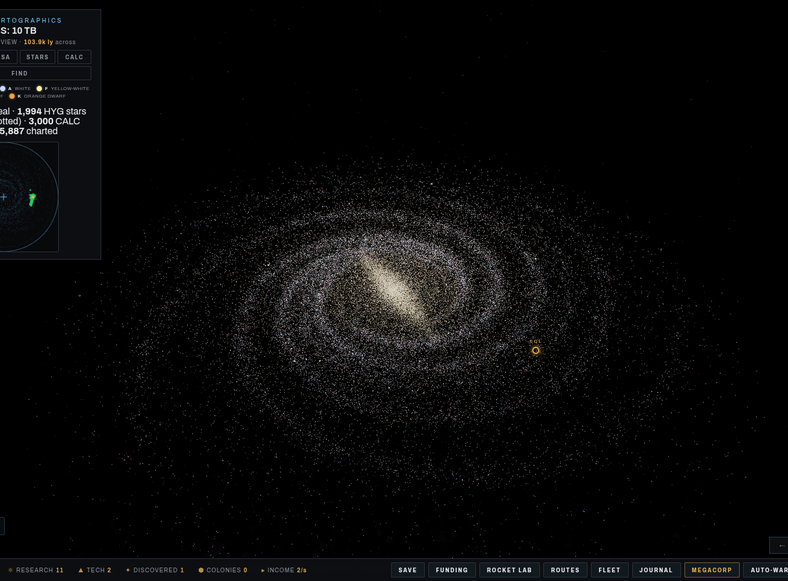
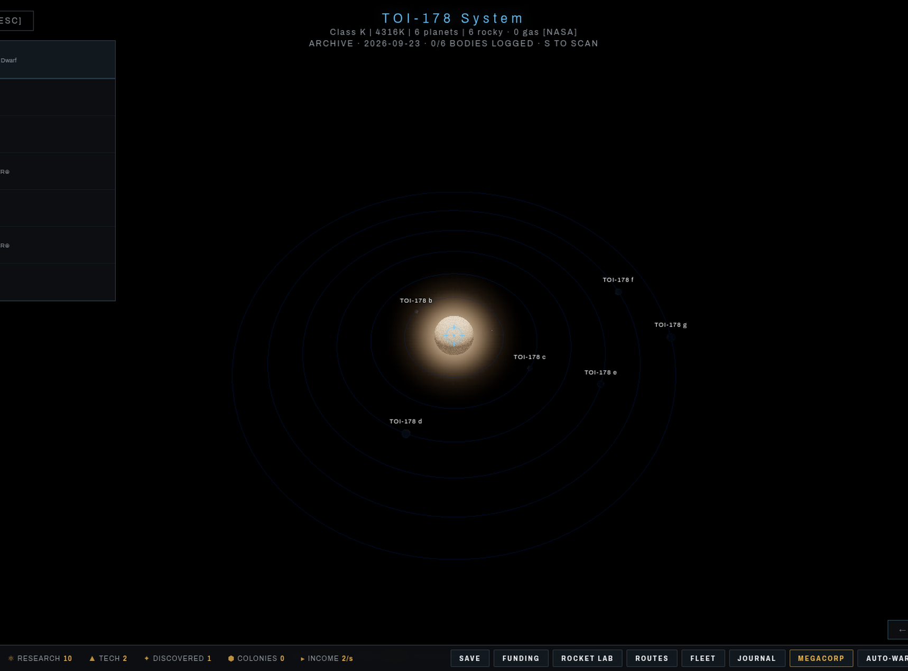
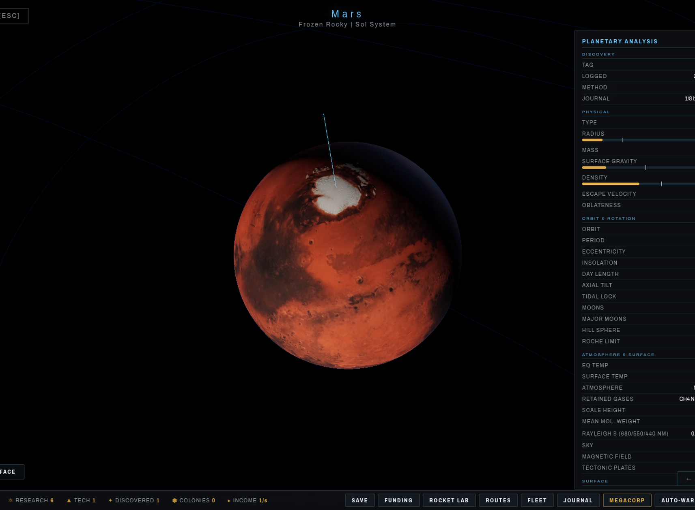

A SPACE GAME IN YOUR BROWSER • GALAXY EXPLORER • ROCKET ENGINEERING LAB • IDLE-TYCOON COLONIES
Fly through a 160K-particle galaxy with a real-data star map, then build an idle empire across it.

The game has three layers: the galaxy, rockets and colonies. Here’s the galaxy, from the whole spiral down to a single planet.
Four spiral arms, a central bar, a galactic bulge and a diffuse halo. All of it comes from compiled WASM bytecode, so it’s fast and the code stays protected.
Galaxy, Sector, Region, Local. Far out, a density map fades in. Up close, single stars pop out. Full orbit camera controls the whole way.
Procedurally generated star systems, each with planets grown by a core-accretion formation model and sorted into 12 types, from Hot Jupiter and Warm Neptune to Super Earth, Temperate, Frozen Rocky and Ice World.
1000 confirmed exoplanets from a NASA Exoplanet Archive snapshot that gets refreshed every week, with the live TAP API as a backup. Real star temperatures, planet radii, masses and orbit data!
Flip between NASA-sourced and procedurally generated systems on the galaxy map. NASA systems glow green, so you can spot them among thousands of stars.
Double-click any planet and you zoom into a high-resolution 3D model: axial tilt, spin, orbiting moons, atmosphere glow and a full planetary data readout.
Every planet gets its own surface, generated with fractal noise (fBm) in WASM: gas bands, lava cracks, ice sheets, oceans and terrain.
The core algorithms (galaxy generation, procedural systems, planet textures) are compiled from Rust to WebAssembly. They run at native speed as a compiled binary.
Now the other two layers. Design a rocket, fly it, then settle the worlds you find.
Build a rocket stage by stage: propellant, engine cycle, injector, nozzle, cooling, tanks and structure. Every number comes out of a component model with a pass or fail verdict. Then you launch it and watch the ascent.
Launch from Earth, the Moon, Mars, Venus, Titan, Mercury, Europa or Ceres. Each world needs a different speed to reach orbit, so the same rocket does very different things.
Settle the planets you find and build on them, from a mining outpost all the way up to a Dyson collector. Colonies earn credits and research while you play, and keep earning at half rate while you’re away.
Supercruise between planets at a fraction of light speed, run trade routes between your colonies, upgrade your ship’s modules, and log every system you discover in your journal.
Click any shot to see it big.


The Rust-compiled WASM module loads first and hands the renderer its generators, among them gen_galaxy, gen_systems and gen_texture.
WASM builds 160K particle positions and colors from spiral-arm math, the bar structure, the bulge distribution and the diffuse halo, and returns them as one packed Float32Array.
Your browser loads the NASA archive snapshot and passes it to WASM, which groups it by host star, classifies the planets, assigns colors and merges it with 3000 procedural systems.
Three.js takes the WASM output and builds the point clouds, shader materials and bloom post-processing. Planet textures get generated on demand with WASM fBm noise.
Procedural generation means the content comes from algorithms instead of being placed by hand. In Amni-Explore the whole galaxy (160,000 particles forming spiral arms, a central bar, a galactic bulge and a diffuse halo) comes from math functions compiled to WebAssembly.
Spiral arm formation uses logarithmic spiral equations plus Gaussian noise to get the shape of a barred spiral galaxy (similar to the Milky Way’s SBbc classification). Each arm has a pitch angle, a width gradient and a star density profile that decide how particles spread from the core outward.
Star classification follows the Hertzsprung-Russell diagram. Hot blue stars (O/B type) show up in the arms, where stars are actively forming. Cooler orange and red stars (K/M type) fill the bulge and the gaps between arms. The color temperature mapping uses real astrophysical blackbody radiation curves.
Planet textures use fractional Brownian motion (fBm), a layered noise algorithm that sums several octaves of Perlin-like noise at falling amplitudes and rising frequencies. Out come realistic-looking terrain, gas cloud bands, lava cracks and ice shelf patterns, all computed per pixel in the WASM module. No pre-baked texture files at all!
NASA integration is where procedural meets real: the game pulls confirmed planets from the Exoplanet Archive’s Table Access Protocol (TAP) API.
| PARAMETER | VALUE |
|---|---|
| Engine | Rust/WASM + Three.js (WebGL2) |
| Galaxy Particles | 160,000 |
| Spiral Arms | 4 plus a spur |
| Procedural Systems | 3,000 |
| NASA Systems | ~900 (1,000 confirmed planets, weekly snapshot) |
| Planet Types | 12 classifications |
| Texture Resolution | 256×256 in a system, 512-1024 up close (WASM-generated fBm) |
| Post-Processing | Unreal Bloom (HDR) |
| Shaders | Custom GLSL vertex + fragment |
| WASM Binary | ~200 KB (Rust, release-optimized) |
| Data Source | NASA Exoplanet Archive TAP/sync, HYG v4.1 star catalogue |
| Rocket Lab | Component engine, structure and ascent models |
| Colonies | 7 building types, offline earnings |
| Requirements | WebGL2-capable browser |
It runs right in your browser. No download, no account, nothing to install. Go!
Needs WebGL2 • Plays best on desktop